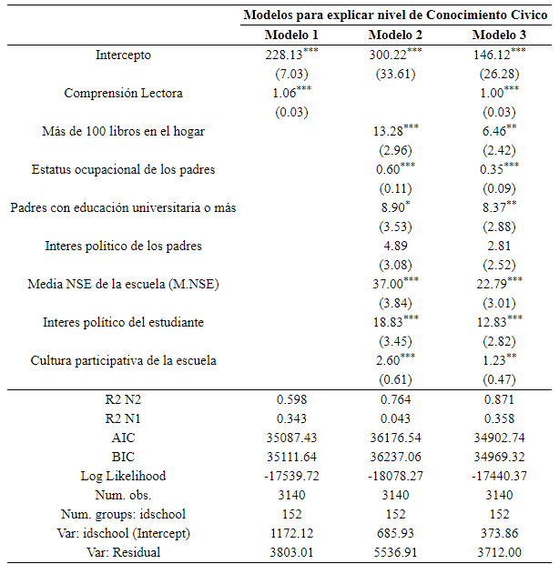
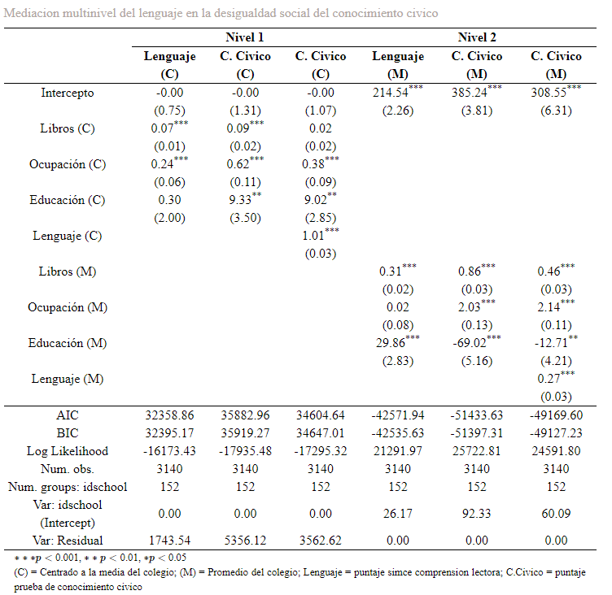

4.3 Modelos
4.3.1 Análisis Multinivel: Varianza entre escuelas
A partir del modelo nulo, utilizando la varianza entre grupos y residual, se cálculo la correlación intraclase, es decir, la proporción de la varianza del conocimiento cívico que es explicada por el nivel escuela. Prácticamente un tercio de la varianza del conocimiento cívico depende del nivel escolar y agregado, lo que da cuenta de la importancia de controlar por estas variables así como de investigar que cualidades de la escuela fomentan el conocimiento cívico.
Figura 4.6: Proporción de varianza entre y dentro
4.3.2 Resultados del análisis multinivel: efectos
En la tabla consecutiva se presentan 3 modelos multinivel. El primer modelo evalúa la propuesta de esta tesis, la asociación entre Conocimiento Cívico y Comprensión Lectora. El segundo modelo expone las variables señaladas por la literatura para explicar. Por último, el tercer modelo evalúa si el efecto de la comprensión lectora es controlado por otras variables relevantes como el origen del estudiante, sus intereses y las practicas escolares.

El primer modelo nos permite evidenciar la asociación entre comprensión lectora y conocimiento cívico. El efecto es significativo con un 99% de confianza. Por cada punto que aumenta la comprensión lectora, aumenta un punto el conocimiento cívico. La fuerza de la relación es considerablemente alta. A nivel escuelas prácticamente el 60% de la varianza del conocimiento cívico es explicada por las diferencias en comprensión lectora. A nivel estudiante, el 34% de la varianza es explicada por la comprensión lectora. En suma, la comprensión lectora tiene un potencial explicativo sobre las diferencias entre las escuelas y entre los estudiantes sobre conocimiento cívico.
El segundo modelo presenta el efecto de las variables consideradas relevantes por la literatura. En general poseen un efecto de gran tamaño. Tener más de 100 libros en el hogar implica 13 puntos más en la prueba de conocimiento cívico con un 99%. El modelo que incluye teoría de recursos y de socialización es muy efectivo para explicar las diferencias entre escuelas, explicando un 76% de ellas. No obstante, es muy incapaz de explicar diferencias entre estudiantes de un mismo contexto, pues solo explica el 4% de la varianza dentro de las escuelas.
El tercer modelo incluye tanto la propuesta teórica de esta tesis como los efectos destacados anteriormente por el campo de investigación, permitiendo controlarlos. Como se puede ver el efecto de la comprensión lectora se mantiene más o menos igual al incluir todas las variables de origen económico y socialización política, dando cuenta que es una relación robusta frente a otras explicaciones. También se puede apreciar como son controladas las variables de origen familiar, el efecto de tener libros en el hogar y el del estatus ocupacional de los padres disminuye a la mitad. Esto indica que parte del efecto del origen social se podría explicar por la trasmisión de ventajas para desarrollar la comprensión lectora. Este modelo final posee una gran capacidad explicativa a nivel 2 explicando el 87% de la varianza del conocimiento cívico y un 35% de la varianza entre estudiantes.
En suma, se puede ver que la comprensión lectora posee un efecto significativo de gran intensidad sobre la comprensión lectora. Incorporar la comprensión lectora agrega una buena proporción de varianza explicada, especialmente a nivel estudiantes, que es donde más hay varianza y los otros modelos no habían podido explicarla. Además, este efecto se mantiene al controlar por variables de origen, más aún, es capas de controlar buena parte de sus efectos, lo cual profundizaremos a continuación con los análisis de medicación multinivel.
4.3.3 Resultados de la mediación multinivel.
A continuación, se presentan los resultados del análisis de mediación multinivel. En estos se evalúa la capacidad del lenguaje de explicar la relación entre NSE y conocimiento cívico, haciendo esta evaluación a nivel uno y nivel dos como recomienda la literatura. Para este fin, se evalúa primero, si el NSE se relaciona con lenguaje, luego si el NSE se relaciona con el conocimiento cívico y, posteriormente, si es que el efecto de NSE sobre conocimiento cívico es controlado por la comprensión lectora, repitiendo este proceso en ambos niveles. En la siguiente tabla el nombre de la columna indica la variable dependiente.

A partir de los resultados de la tabla anterior, es posible concluir que la comprensión lectora posee la capacidad de explicar parcialmente la desigualdad en el conocimiento cívico. En primer lugar, en torno al nivel uno, podemos ver que el lenguaje es influido por la cantidad de libros en el hogar y la ocupación de los padres, pero no la educación de los padres. Seguidamente se constata que las tres variables afectan el conocimiento cívico y que, al incluir el manejo del lenguaje como control, desaparece completamente el efecto de tener libros en el hogar, esto es un descubrimiento interesante considerando el rol que ha tenido esta variable para explicar el conocimiento cívico. Además el efecto de la ocupación es controlado en un 38%, lo cual es comprensible, de modo tal que parte del efecto de la ocupación de los padres se debe a que fomenta, ya sea por socialización o recursos, un mejor manejo del lenguaje, como señalaba Bernstein. Curiosamente el efecto de tener padres con nivel universitario no es controlado por el lenguaje.
A nivel dos, se puede ver que la cantidad de libros promedio del hogar y la proporción de padres universitarios poseen un efecto en el promedio de la comprensión del lenguaje. Seguidamente, se puede ver que todas las variables de recursos afectan el promedio de conocimiento cívico, aunque resulta extraño el efecto negativo que posee la proporción de padres universitarios. Al incluir el control por el promedio de puntaje en lenguaje del colegio, la variable agregada de los libros disminuye su efecto al igual que la variable de educación de los padres. No obstante, no se logra controlar el efecto del estatus ocupacional promedio de los padres.